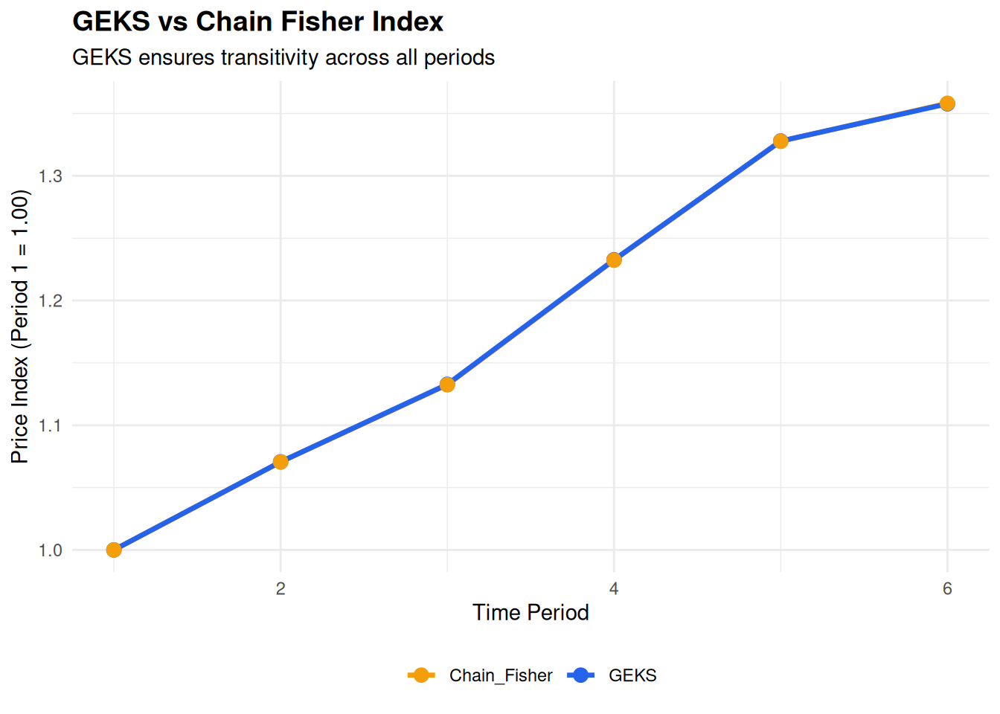

library(tidyverse)
# Generate sample data for 6 time periods
set.seed(123)
n_periods <- 6
n_items <- 5
# Create price and quantity data
price_data <- matrix(NA, n_items, n_periods)
quantity_data <- matrix(NA, n_items, n_periods)
# Initial prices and quantities
price_data[, 1] <- c(10, 20, 15, 25, 30)
quantity_data[, 1] <- c(100, 50, 80, 40, 30)
# Simulate price and quantity changes
for (t in 2:n_periods) {
price_data[, t] <- price_data[, t-1] * runif(n_items, 0.98, 1.12)
quantity_data[, t] <- quantity_data[, t-1] * runif(n_items, 0.95, 1.05)
}
# Fisher index function (from Week 2)
fisher_bilateral <- function(p_s, p_t, q_s, q_t) {
laspeyres <- sum(p_t * q_s) / sum(p_s * q_s)
paasche <- sum(p_t * q_t) / sum(p_s * q_t)
return(sqrt(laspeyres * paasche))
}
# GEKS index function
geks_index <- function(price_data, quantity_data, period_0, period_t) {
n_periods <- ncol(price_data)
# Calculate all bilateral indices
bilateral_matrix <- matrix(1, n_periods, n_periods)
for (s in 1:n_periods) {
for (t in 1:n_periods) {
if (s != t) {
bilateral_matrix[s, t] <- fisher_bilateral(
price_data[, s], price_data[, t],
quantity_data[, s], quantity_data[, t]
)
}
}
}
# Calculate GEKS index
product <- 1
for (j in 1:n_periods) {
product <- product * (bilateral_matrix[period_0, j] /
bilateral_matrix[period_t, j])
}
geks <- product^(1/n_periods)
return(geks)
}
# Calculate GEKS indices for all periods relative to period 1
geks_indices <- numeric(n_periods)
geks_indices[1] <- 1 # Base period
for (t in 2:n_periods) {
geks_indices[t] <- geks_index(price_data, quantity_data, 1, t)
}
# Also calculate chain Fisher for comparison
chain_fisher <- numeric(n_periods)
chain_fisher[1] <- 1
for (t in 2:n_periods) {
fisher <- fisher_bilateral(
price_data[, t-1], price_data[, t],
quantity_data[, t-1], quantity_data[, t]
)
chain_fisher[t] <- chain_fisher[t-1] * fisher
}
# Create comparison data frame
comparison <- data.frame(
Period = 1:n_periods,
GEKS = geks_indices,
Chain_Fisher = chain_fisher
)
print(comparison) Period GEKS Chain_Fisher
1 1 1.000000 1.000000
2 2 1.070637 1.070558
3 3 1.132790 1.132415
4 4 1.232644 1.232333
5 5 1.327921 1.327732
6 6 1.357781 1.358189# Visualization
comparison_long <- comparison %>%
pivot_longer(cols = c(GEKS, Chain_Fisher),
names_to = "Method", values_to = "Index")
ggplot(comparison_long, aes(x = Period, y = Index,
color = Method, group = Method)) +
geom_line(linewidth = 1.2) +
geom_point(size = 3) +
scale_color_manual(values = c("GEKS" = "#2563eb",
"Chain_Fisher" = "#f59e0b")) +
labs(
title = "GEKS vs Chain Fisher Index",
subtitle = "GEKS ensures transitivity across all periods",
y = "Price Index (Period 1 = 1.00)",
x = "Time Period"
) +
theme_minimal() +
theme(
plot.title = element_text(face = "bold", size = 14),
legend.position = "bottom",
legend.title = element_blank()
)